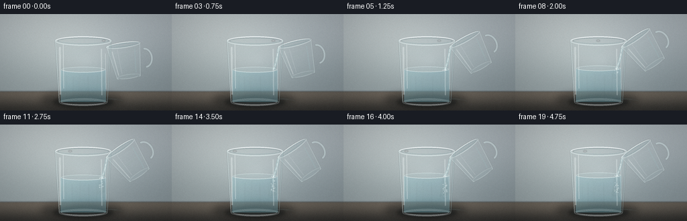
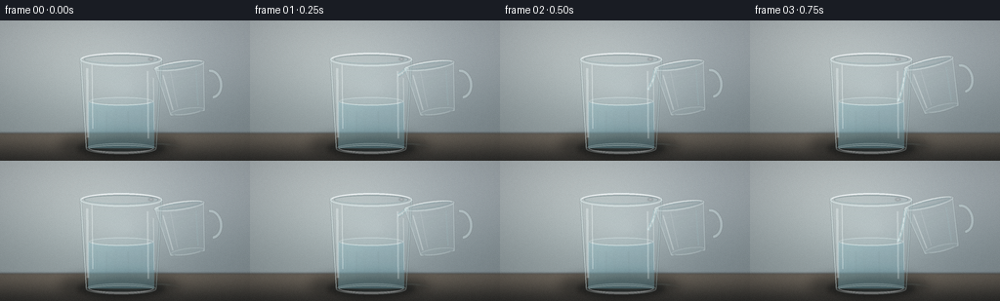
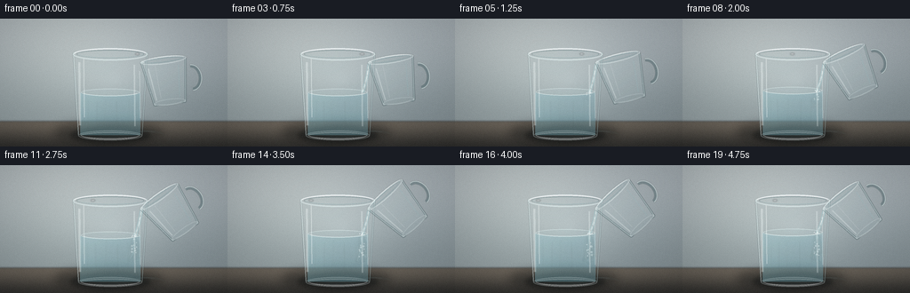
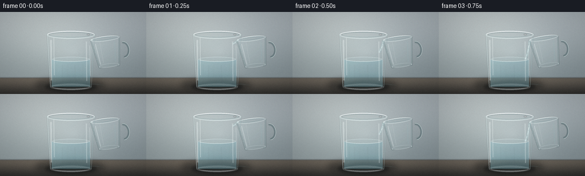
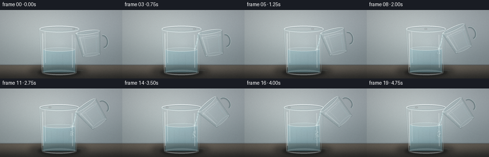
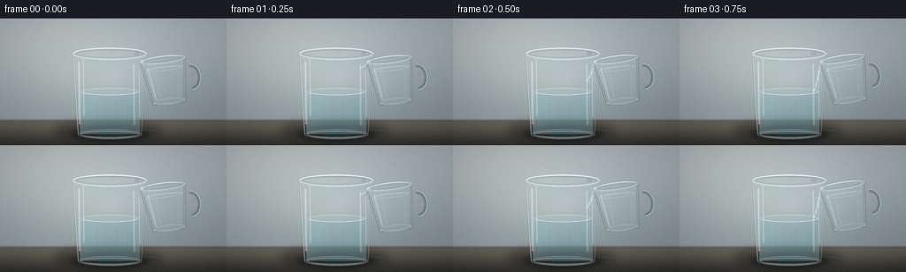

CODING AGENTS AS PIXEL WORLD MODELS
traex/DeepSeek-V4.1-Flash · material_0022
点击播放 · 原生 RGB 像素
此结果可播放，但该运行尚未通过最终提交审核。页面展示不代表评测通过。
逐轮保存的候选
回放视频、检查图与代码变化。
每份候选均可单独播放。实际图片检查记录在下方工具轨迹中。
候选 01播放与检查图
点击播放 · 原生 RGB 像素


展开代码变化
--- 上一保存版本
+++ 本次保存版本
@@ -0,0 +1,503 @@
+from pathlib import Path
+
+import cv2
+import numpy as np
+from PIL import Image, ImageDraw, ImageFilter
+
+import artifact_io
+
+
+ROOT = Path(__file__).resolve().parent
+W, H = 256, 144
+SS = 4
+CW, CH = W * SS, H * SS
+FRAMES = 20
+FPS = 4.0
+
+
+def px(value):
+ return int(round(value * SS))
+
+
+def box(x0, y0, x1, y1):
+ return [px(x0), px(y0), px(x1), px(y1)]
+
+
+def smoothstep(value):
+ value = np.clip(value, 0.0, 1.0)
+ return value * value * (3.0 - 2.0 * value)
+
+
+def lerp(a, b, t):
+ return a + (b - a) * t
+
+
+def make_background():
+ yy, xx = np.mgrid[0:H, 0:W].astype(np.float32)
+ yn = yy / (H - 1)
+ xn = xx / (W - 1)
+
+ top = np.array([188, 197, 200], dtype=np.float32)
+ middle = np.array([159, 171, 173], dtype=np.float32)
+ lower = np.array([105, 114, 112], dtype=np.float32)
+ wall_t = smoothstep((yn - 0.04) / 0.73)
+ wall = top[None, None, :] * (1.0 - wall_t[:, :, None])
+ wall += middle[None, None, :] * wall_t[:, :, None]
+
+ glow = np.exp(-((xx - 76.0) / 105.0) ** 2 - ((yy - 27.0) / 92.0) ** 2)
+ wall += glow[:, :, None] * np.array([17, 16, 12], dtype=np.float32)
+ side_shade = np.exp(-((xx - 218.0) / 75.0) ** 2) * (0.20 + 0.55 * yn)
+ wall -= side_shade[:, :, None] * np.array([17, 16, 14], dtype=np.float32)
+
+ horizon = 115.0
+ table_mask = smoothstep((yy - horizon + 1.7) / 3.4)
+ table_top = np.array([112, 105, 94], dtype=np.float32)
+ table_bottom = np.array([55, 54, 50], dtype=np.float32)
+ table_t = smoothstep((yn - 0.80) / 0.23)
+ table = table_top[None, None, :] * (1.0 - table_t[:, :, None])
+ table += table_bottom[None, None, :] * table_t[:, :, None]
+ table += np.exp(-((xx - 100.0) / 100.0) ** 2 - ((yy - 123.0) / 22.0) ** 2)[
+ :, :, None
+ ] * np.array([12, 10, 8], dtype=np.float32)
+
+ image = wall * (1.0 - table_mask[:, :, None]) + table * table_mask[:, :, None]
+ edge_shadow = np.exp(-((yy - horizon) / 1.25) ** 2)
+ image -= edge_shadow[:, :, None] * np.array([22, 20, 17], dtype=np.float32)
+
+ vignette = 0.83 + 0.17 * (
+ 1.0 - np.sqrt(((xn - 0.5) / 0.72) ** 2 + ((yn - 0.49) / 0.72) ** 2)
+ )
+ image *= np.clip(vignette, 0.72, 1.0)[:, :, None]
+ image = np.clip(image, 0, 255).astype(np.uint8)
+
+ background = Image.fromarray(image, "RGB").resize((CW, CH), Image.Resampling.BICUBIC)
+ return background.convert("RGBA")
+
+
+def add_soft_shape(layer, shape, color, blur):
+ patch = Image.new("RGBA", layer.size, (0, 0, 0, 0))
+ draw = ImageDraw.Draw(patch)
+ draw.ellipse(box(*shape), fill=color)
+ patch = patch.filter(ImageFilter.GaussianBlur(px(blur)))
+ layer.alpha_composite(patch)
+
+
+def add_table_shadows(image):
+ shadow = Image.new("RGBA", image.size, (0, 0, 0, 0))
+ add_soft_shape(shadow, (61, 116, 183, 140), (18, 21, 20, 105), 5.2)
+ add_soft_shape(shadow, (79, 122, 169, 140), (12, 15, 14, 90), 2.3)
+
+ reflection = Image.new("RGBA", image.size, (0, 0, 0, 0))
+ add_soft_shape(reflection, (104, 123, 160, 134), (184, 211, 210, 24), 4.0)
+ reflection = reflection.filter(ImageFilter.GaussianBlur(px(0.6)))
+ image.alpha_composite(shadow)
+ image.alpha_composite(reflection)
+
+
+def glass_halfwidth(y, inner=False):
+ t = np.clip((y - 38.0) / 94.0, 0.0, 1.0)
+ outer = lerp(41.5, 35.8, t)
+ if inner:
+ return outer - 4.8
+ return outer
+
+
+def side_polygon(level=None):
+ left = []
+ right = []
+ start = 38.0 if level is None else level
+ for y in np.linspace(start, 131.0, 80):
+ hw = glass_halfwidth(y, inner=level is not None)
+ left.append((124.0 - hw, y))
+ right.append((124.0 + hw, y))
+ return left + right[::-1]
+
+
+def water_mask(level):
+ mask = Image.new("L", (CW, CH), 0)
+ draw = ImageDraw.Draw(mask)
+ hw = glass_halfwidth(level, inner=True) - 0.3
+ top = []
+ for x in np.linspace(-hw, hw, 100):
+ y = level + 3.8 * np.sqrt(max(0.0, 1.0 - (x / hw) ** 2))
+ top.append((px(124.0 + x), px(y)))
+ polygon = top + [(px(124.0 + hw), px(131)), (px(124.0 - hw), px(131))]
+ draw.polygon(polygon, fill=255)
+ return mask
+
+
+def water_gradient(level, frame):
+ top = np.array([190, 218, 222, 92], dtype=np.float32)
+ bottom = np.array([96, 145, 156, 122], dtype=np.float32)
+ yy = np.linspace(0.0, 1.0, CH, dtype=np.float32)[:, None, None]
+ alpha_band = 0.035 * np.sin(np.linspace(0.0, 11.0 * np.pi, CH, dtype=np.float32))
+ colors = top[None, None, :] * (1.0 - yy) + bottom[None, None, :] * yy
+ colors[:, :, 3] += alpha_band[:, None] * 255.0
+ colors = np.repeat(colors, CW, axis=1)
+
+ xx = np.arange(CW, dtype=np.float32)[None, :]
+ side_light = np.exp(-((xx - px(91.0)) / px(24.0)) ** 2)
+ colors[:, :, :3] += side_light[:, :, None] * np.array([14, 17, 16], dtype=np.float32)
+ return Image.fromarray(np.clip(colors, 0, 255).astype(np.uint8), "RGBA")
+
+
+def draw_water(image, level, frame):
+ mask = water_mask(level)
+ liquid = water_gradient(level, frame)
+ water = Image.new("RGBA", image.size, (0, 0, 0, 0))
+ water.paste(liquid, (0, 0), mask)
+
+ shimmer = Image.new("RGBA", image.size, (0, 0, 0, 0))
+ draw = ImageDraw.Draw(shimmer)
+ for index, x in enumerate((99, 108, 118, 132, 145, 153)):
+ phase = frame * 0.38 + index * 1.71
+ dx = 1.3 * np.sin(phase)
+ top_y = level + 8 + index % 2 * 2
+ bottom_y = 128 - (index % 3) * 2
+ draw.line(
+ [(px(x + dx), px(top_y)), (px(x + dx * 0.45), px(bottom_y))],
+ fill=(221, 241, 241, 20 + (index % 2) * 7),
+ width=px(0.55 + 0.18 * (index % 3)),
+ )
+ shimmer = shimmer.filter(ImageFilter.GaussianBlur(px(0.55)))
+ shimmer.putalpha(Image.composite(shimmer.getchannel("A"), Image.new("L", image.size, 0), mask))
+ water.alpha_composite(shimmer)
+
+ image.alpha_composite(water)
+
+ surface = Image.new("RGBA", image.size, (0, 0, 0, 0))
+ draw = ImageDraw.Draw(surface)
+ hw = glass_halfwidth(level, inner=True) - 1.1
+ draw.ellipse(
+ box(124 - hw, level - 4.2, 124 + hw, level + 4.2),
+ fill=(184, 218, 220, 30),
+ outline=(230, 247, 245, 112),
+ width=px(0.7),
+ )
+ draw.arc(
+ box(124 - hw + 2, level - 3.7, 124 + hw - 2, level + 4.0),
+ 8,
+ 172,
+ fill=(244, 252, 249, 140),
+ width=px(0.65),
+ )
+ image.alpha_composite(surface)
+
+
+def draw_mixing(image, level, progress, frame):
+ if progress <= 0:
+ return
+ layer = Image.new("RGBA", image.size, (0, 0, 0, 0))
+ draw = ImageDraw.Draw(layer)
+ impact_x = 151.0
+ reach = lerp(5.0, 43.0, progress)
+
+ for strand in range(7):
+ offset = (strand - 3) * 1.75
+ delay = 0.06 + 0.055 * strand
+ strand_t = np.clip((progress - delay) / (1.0 - delay), 0.0, 1.0)
+ if strand_t <= 0:
+ continue
+ points = []
+ depth = reach * (0.58 + 0.08 * (strand % 3))
+ for step in range(38):
+ t = step / 37.0
+ y = level + 3.0 + depth * t
+ curl = (2.7 + 0.55 * strand) * np.sin(
+ t * (4.4 + 0.35 * strand) + frame * 0.31 + strand * 1.4
+ )
+ drift = offset * (0.35 + 0.65 * t)
+ x = impact_x + drift + curl * t
+ points.append((px(x), px(y)))
+ alpha = int(22 + 28 * strand_t)
+ width = px(0.75 + 0.26 * (strand % 3))
+ color = (219, 242, 238, alpha) if strand % 2 == 0 else (151, 209, 213, alpha)
+ draw.line(points, fill=color, width=width, joint="curve")
+
+ layer = layer.filter(ImageFilter.GaussianBlur(px(0.65)))
+ clip = water_mask(level)
+ layer.putalpha(Image.composite(layer.getchannel("A"), Image.new("L", image.size, 0), clip))
+ image.alpha_composite(layer)
+
+ bubbles = Image.new("RGBA", image.size, (0, 0, 0, 0))
+ bdraw = ImageDraw.Draw(bubbles)
+ for index in range(12):
+ birth = 0.06 + index * 0.07
+ if progress < birth:
+ continue
+ age = progress - birth
+ x = impact_x + 2.8 * np.sin(index * 2.23 + frame * 0.55)
+ y = level + 3.0 + (8.0 + index * 2.1) * min(1.0, age * 2.3)
+ radius = 0.45 + 0.25 * (index % 3)
+ bdraw.ellipse(
+ box(x - radius, y - radius, x + radius, y + radius),
+ fill=(235, 250, 247, 86),
+ outline=(255, 255, 255, 110),
+ width=px(0.25),
+ )
+ bubbles.putalpha(Image.composite(bubbles.getchannel("A"), Image.new("L", image.size, 0), clip))
+ image.alpha_composite(bubbles)
+
+
+def draw_ripples(image, level, frame):
+ if frame < 3:
+ return
+ layer = Image.new("RGBA", image.size, (0, 0, 0, 0))
+ draw = ImageDraw.Draw(layer)
+ for source_frame in (3, 8, 13, 18):
+ age = frame - source_frame
+ if age < 0:
+ continue
+ radius = 1.8 + age * 2.4
+ alpha = int(max(0, 96 - age * 9))
+ if alpha <= 0:
+ continue
+ rx = radius
+ ry = 0.52 + radius * 0.16
+ draw.ellipse(
+ box(151 - rx, level - ry, 151 + rx, level + ry),
+ outline=(236, 250, 246, alpha),
+ width=px(0.55),
+ )
+ clip = water_mask(level)
+ layer.putalpha(Image.composite(layer.getchannel("A"), Image.new("L", image.size, 0), clip))
+ image.alpha_composite(layer)
+
+
+def bezier(p0, p1, p2, steps=46):
+ points = []
+ for t in np.linspace(0.0, 1.0, steps):
+ x = (1 - t) ** 2 * p0[0] + 2 * (1 - t) * t * p1[0] + t**2 * p2[0]
+ y = (1 - t) ** 2 * p0[1] + 2 * (1 - t) * t * p1[1] + t**2 * p2[1]
+ points.append((x, y))
+ return points
+
+
+def draw_stream(image, level, frame, flow):
+ if flow <= 0.01:
+ return
+ lip = np.array([159.0, 50.5])
+ impact_y = level + 1.3
+ end_y = lerp(lip[1] + 1.0, impact_y, flow)
+ sway = 0.7 * np.sin(frame * 0.8)
+ width_pulse = 0.22 * np.sin(frame * 1.25)
+ control = (156.8 + sway, lerp(lip[1], end_y, 0.52))
+ end = (151.2 + 0.4 * np.sin(frame * 0.63), end_y)
+ points = bezier(tuple(lip), control, end)
+ if flow < 0.98:
+ points = [point for point in points if point[1] <= end_y]
+
+ layer = Image.new("RGBA", image.size, (0, 0, 0, 0))
+ draw = ImageDraw.Draw(layer)
+ scaled = [(px(x), px(y)) for x, y in points]
+ draw.line(scaled, fill=(142, 205, 210, 64), width=px(3.6 + width_pulse), joint="curve")
+ draw.line(scaled, fill=(209, 239, 238, 92), width=px(2.2 + width_pulse * 0.5), joint="curve")
+ draw.line(scaled, fill=(247, 253, 250, 146), width=px(0.72), joint="curve")
+
+ highlight = Image.new("RGBA", image.size, (0, 0, 0, 0))
+ hdraw = ImageDraw.Draw(highlight)
+ for t in (0.18, 0.39, 0.64, 0.84):
+ index = min(len(points) - 1, int(t * (len(points) - 1)))
+ x, y = points[index]
+ length = 1.8 + 0.8 * np.sin(frame * 0.7 + t * 9)
+ hdraw.line(
+ [(px(x - 0.45), px(y)), (px(x - 0.45), px(y + length))],
+ fill=(255, 255, 255, 156),
+ width=px(0.45),
+ )
+ highlight = highlight.filter(ImageFilter.GaussianBlur(px(0.35)))
+ layer.alpha_composite(highlight)
+ image.alpha_composite(layer)
+
+
+def draw_source_vessel(image, angle):
+ layer = Image.new("RGBA", image.size, (0, 0, 0, 0))
+ draw = ImageDraw.Draw(layer)
+ pivot = (159.0, 50.5)
+
+ # Small clear carafe. It is drawn upright, then rotated around its pouring lip.
+ body = [(159, 49), (209, 49), (203, 99), (168, 99)]
+ draw.polygon([(px(x), px(y)) for x, y in body], fill=(208, 226, 227, 20))
+ draw.line(
+ [(px(159), px(50)), (px(168), px(99)), (px(203), px(99)), (px(209), px(50))],
+ fill=(226, 242, 240, 88),
+ width=px(1.25),
+ joint="curve",
+ )
+
+ # Handle and thick glass edges.
+ draw.arc(box(202, 58, 225, 88), 268, 92, fill=(220, 239, 237, 104), width=px(3.0))
+ draw.arc(box(205, 62, 220, 84), 270, 90, fill=(242, 252, 249, 60), width=px(0.8))
+ draw.line([(px(166), px(57)), (px(171), px(94))], fill=(244, 252, 249, 98), width=px(1.2))
+ draw.line([(px(174), px(55)), (px(176), px(92))], fill=(255, 255, 255, 78), width=px(0.55))
+ draw.line([(px(200), px(57)), (px(197), px(93))], fill=(173, 210, 211, 62), width=px(1.4))
+
+ # Open rim, inner wall, and a slightly irregular pouring spout.
+ draw.ellipse(box(158, 45, 210, 54), fill=(188, 215, 216, 22), outline=(240, 250, 247, 150), width=px(1.1))
+ draw.ellipse(box(162, 47, 206, 52), outline=(101, 139, 143, 104), width=px(0.65))
+ draw.polygon(
+ [(px(157.0), px(50.0)), (px(160.0), px(47.0)), (px(163.0), px(50.2))],
+ fill=(236, 249, 246, 128),
+ )
+ draw.arc(box(160, 46, 208, 53), 190, 348, fill=(255, 255, 255, 176), width=px(0.8))
+
+ # Bottom glass and soft internal glints.
+ draw.ellipse(box(168, 94, 203, 101), fill=(186, 212, 213, 30), outline=(226, 240, 238, 92), width=px(0.8))
+ draw.arc(box(172, 96, 199, 100), 8, 174, fill=(249, 254, 251, 112), width=px(0.55))
+ for y, alpha in ((60, 55), (72, 43), (84, 31)):
+ draw.line([(px(164), px(y)), (px(205), px(y + 1))], fill=(225, 242, 239, alpha), width=px(0.42))
+
+ layer = layer.filter(ImageFilter.GaussianBlur(px(0.18)))
+ rotated = layer.rotate(
+ angle,
+ resample=Image.Resampling.BICUBIC,
+ center=(px(pivot[0]), px(pivot[1])),
+ fillcolor=(0, 0, 0, 0),
+ )
+ image.alpha_composite(rotated)
+
+
+def draw_glass_front(image, level, frame):
+ outline = Image.new("RGBA", image.size, (0, 0, 0, 0))
+ draw = ImageDraw.Draw(outline)
+
+ # The transparent body is represented by a faint tint, edge density, and reflections.
+ body_points = [(px(x), px(y)) for x, y in side_polygon()]
+ draw.polygon(body_points, fill=(209, 230, 230, 13))
+
+ left_points = []
+ right_points = []
+ for y in np.linspace(38.5, 131.0, 90):
+ hw = glass_halfwidth(y)
+ left_points.append((px(124.0 - hw), px(y)))
+ right_points.append((px(124.0 + hw), px(y)))
+ draw.line(left_points, fill=(46, 69, 71, 38), width=px(2.3), joint="curve")
+ draw.line(right_points, fill=(40, 61, 64, 34), width=px(2.3), joint="curve")
+ draw.line(left_points, fill=(234, 248, 246, 122), width=px(0.95), joint="curve")
+ draw.line(right_points, fill=(210, 235, 234, 90), width=px(0.75), joint="curve")
+
+ # Vertical highlights make the clear glass read without turning it opaque.
+ for x, top, bottom, width, alpha in (
+ (89, 49, 120, 2.4, 86),
+ (94, 45, 111, 0.9, 105),
+ (151, 52, 121, 1.8, 74),
+ (157, 59, 112, 0.7, 95),
+ ):
+ draw.line(
+ [(px(x), px(top)), (px(x + 0.7), px(bottom))],
+ fill=(246, 253, 250, alpha),
+ width=px(width),
+ )
+
+ # Rounded base and the thick optical foot.
+ draw.ellipse(box(88, 126, 160, 137), fill=(192, 217, 216, 28), outline=(230, 243, 240, 88), width=px(0.85))
+ draw.ellipse(box(91, 128, 157, 135), fill=(79, 110, 111, 24), outline=(247, 253, 250, 94), width=px(0.65))
+ draw.arc(box(92, 127, 156, 136), 8, 171, fill=(255, 255, 255, 128), width=px(0.75))
+
+ # Rim: outer and inner ellipses plus a bright top-left reflection.
+ draw.ellipse(box(82, 33, 166, 47), fill=(210, 230, 230, 18), outline=(231, 245, 243, 148), width=px(1.45))
+ draw.ellipse(box(86, 35.2, 162, 44.2), outline=(71, 102, 104, 84), width=px(0.7))
+ draw.arc(box(83, 33.5, 165, 46), 188, 346, fill=(255, 255, 255, 214), width=px(0.95))
+ draw.arc(box(87, 36, 161, 44), 8, 168, fill=(154, 190, 191, 100), width=px(0.55))
+
+ # A small moving glint along the front rim.
+ glint_x = 124 + 31 * np.sin(frame * 0.22 + 1.4)
+ glint = Image.new("RGBA", image.size, (0, 0, 0, 0))
+ gdraw = ImageDraw.Draw(glint)
+ gdraw.ellipse(box(glint_x - 2.3, 38.8, glint_x + 2.3, 40.6), fill=(255, 255, 255, 158))
+ glint = glint.filter(ImageFilter.GaussianBlur(px(0.65)))
+ outline.alpha_composite(glint)
+
+ image.alpha_composite(outline)
+
+ # A faint cyan caustic beside the base ties the glass to the tabletop.
+ caustic = Image.new("RGBA", image.size, (0, 0, 0, 0))
+ cdraw = ImageDraw.Draw(caustic)
+ cdraw.arc(box(143, 126, 186, 139), 205, 338, fill=(183, 228, 225, 54), width=px(1.0))
+ cdraw.arc(box(151, 127, 177, 136), 192, 342, fill=(232, 249, 242, 72), width=px(0.55))
+ caustic = caustic.filter(ImageFilter.GaussianBlur(px(0.8)))
+ image.alpha_composite(caustic)
+
+
+def draw_impact_glints(image, level, frame, flow):
+ if flow < 0.98:
+ return
+ layer = Image.new("RGBA", image.size, (0, 0, 0, 0))
+ draw = ImageDraw.Draw(layer)
+ for index in range(5):
+ phase = frame * 0.9 + index * 1.6
+ x = 151 + (index - 2) * 1.15 + 0.6 * np.sin(phase)
+ y = level + 0.5 + 0.7 * np.cos(phase * 1.3)
+ draw.ellipse(
+ box(x - 0.45, y - 0.45, x + 0.45, y + 0.45),
+ fill=(255, 255, 255, 130),
+ )
+ image.alpha_composite(layer)
+
+
+def finalize(image, frame):
+ image = image.convert("RGB").resize((W, H), Image.Resampling.LANCZOS)
+ arr = np.asarray(image, dtype=np.float32)
+ yy, xx = np.mgrid[0:H, 0:W].astype(np.float32)
+ xn = xx / (W - 1)
+ yn = yy / (H - 1)
+
+ # Gentle filmic contrast and restrained cool highlights.
+ arr = (arr - 127.5) * 1.045 + 128.5
+ arr[:, :, 2] += 2.0
+ arr[:, :, 0] -= 0.8
+ vignette = 0.90 + 0.10 * (1.0 - np.sqrt(((xn - 0.5) / 0.72) ** 2 + ((yn - 0.48) / 0.72) ** 2))
+ arr *= np.clip(vignette, 0.82, 1.0)[:, :, None]
+
+ rng = np.random.default_rng(9137)
+ grain = rng.normal(0.0, 1.15, (H, W, 1)).astype(np.float32)
+ arr += grain
+ return np.clip(arr, 0, 255).astype(np.uint8)
+
+
+def render_frame(frame):
+ progress = smoothstep((frame - 1.5) / 5.0)
+ angle = lerp(8.0, 34.0, progress)
+ if frame >= 18:
+ angle -= (frame - 17) * 0.8
+
+ pour_progress = smoothstep((frame - 0.3) / 3.4)
+ level = 83.0 - 7.3 * smoothstep((frame - 2.0) / 17.0)
+ flow = 0.0 if frame == 0 else smoothstep((frame - 0.25) / 3.1)
+ mix_progress = smoothstep((frame - 3.0) / 14.0)
+
+ image = make_background()
+ add_table_shadows(image)
+ draw_water(image, level, frame)
+ draw_mixing(image, level, mix_progress, frame)
+ draw_ripples(image, level, frame)
+ draw_stream(image, level, frame, flow)
+ draw_source_vessel(image, angle)
+ draw_glass_front(image, level, frame)
+ draw_impact_glints(image, level, frame, flow)
+ return finalize(image, frame)
+
+
+def main():
+ frames = np.stack([render_frame(index) for index in range(FRAMES)], axis=0)
+ assert frames.shape == (FRAMES, H, W, 3)
+ assert frames.dtype == np.uint8
+
+ artifact_io.save(frames, ROOT)
+
+ writer = cv2.VideoWriter(
+ str(ROOT / "video.mp4"),
+ cv2.VideoWriter_fourcc(*"mp4v"),
+ FPS,
+ (W, H),
+ )
+ if not writer.isOpened():
+ raise RuntimeError("Could not open MP4 writer")
+ for frame in frames:
+ writer.write(cv2.cvtColor(frame, cv2.COLOR_RGB2BGR))
+ writer.release()
+ print(f"Saved {len(frames)} frames and video.mp4")
+
+
+if __name__ == "__main__":
+ main()
候选 02播放与检查图
点击播放 · 原生 RGB 像素


展开代码变化
--- 上一保存版本
+++ 本次保存版本
@@ -317,16 +317,23 @@
# Small clear carafe. It is drawn upright, then rotated around its pouring lip.
body = [(159, 49), (209, 49), (203, 99), (168, 99)]
- draw.polygon([(px(x), px(y)) for x, y in body], fill=(208, 226, 227, 20))
+ draw.polygon([(px(x), px(y)) for x, y in body], fill=(201, 222, 223, 34))
draw.line(
[(px(159), px(50)), (px(168), px(99)), (px(203), px(99)), (px(209), px(50))],
- fill=(226, 242, 240, 88),
- width=px(1.25),
+ fill=(34, 64, 67, 88),
+ width=px(2.15),
joint="curve",
)
+ draw.line(
+ [(px(159), px(50)), (px(168), px(99)), (px(203), px(99)), (px(209), px(50))],
+ fill=(236, 248, 246, 142),
+ width=px(0.78),
+ joint="curve",
+ )
# Handle and thick glass edges.
- draw.arc(box(202, 58, 225, 88), 268, 92, fill=(220, 239, 237, 104), width=px(3.0))
+ draw.arc(box(202, 58, 225, 88), 268, 92, fill=(40, 70, 73, 78), width=px(4.0))
+ draw.arc(box(202, 58, 225, 88), 268, 92, fill=(226, 242, 239, 132), width=px(1.35))
draw.arc(box(205, 62, 220, 84), 270, 90, fill=(242, 252, 249, 60), width=px(0.8))
draw.line([(px(166), px(57)), (px(171), px(94))], fill=(244, 252, 249, 98), width=px(1.2))
draw.line([(px(174), px(55)), (px(176), px(92))], fill=(255, 255, 255, 78), width=px(0.55))
@@ -456,15 +463,15 @@
def render_frame(frame):
- progress = smoothstep((frame - 1.5) / 5.0)
- angle = lerp(8.0, 34.0, progress)
- if frame >= 18:
- angle -= (frame - 17) * 0.8
+ progress = smoothstep((frame - 1.0) / 14.0)
+ angle = lerp(7.0, 42.0, progress)
+ if frame >= 17:
+ angle -= (frame - 16) * 1.25
pour_progress = smoothstep((frame - 0.3) / 3.4)
level = 83.0 - 7.3 * smoothstep((frame - 2.0) / 17.0)
flow = 0.0 if frame == 0 else smoothstep((frame - 0.25) / 3.1)
- mix_progress = smoothstep((frame - 3.0) / 14.0)
+ mix_progress = smoothstep((frame - 2.0) / 13.0)
image = make_background()
add_table_shadows(image)
候选 03播放与检查图
点击播放 · 原生 RGB 像素


展开代码变化
--- 上一保存版本
+++ 本次保存版本
@@ -318,6 +318,22 @@
# Small clear carafe. It is drawn upright, then rotated around its pouring lip.
body = [(159, 49), (209, 49), (203, 99), (168, 99)]
draw.polygon([(px(x), px(y)) for x, y in body], fill=(201, 222, 223, 34))
+
+ # Clear glycerin has only a faint meniscus and low-frequency optical shading.
+ draw.polygon(
+ [(px(161.5), px(60)), (px(206.5), px(60)), (px(202.2), px(96)), (px(169.2), px(96))],
+ fill=(191, 218, 220, 28),
+ )
+ draw.ellipse(
+ box(162.0, 57.8, 206.0, 62.6),
+ fill=(188, 218, 220, 24),
+ outline=(244, 252, 249, 120),
+ width=px(0.62),
+ )
+ draw.arc(box(163, 58.4, 205, 62.2), 190, 348, fill=(255, 255, 255, 126), width=px(0.48))
+ draw.line([(px(169.2), px(65)), (px(171.0), px(93))], fill=(238, 249, 246, 55), width=px(0.5))
+ draw.line([(px(199.0), px(65)), (px(197.4), px(92))], fill=(116, 158, 160, 50), width=px(0.7))
+
draw.line(
[(px(159), px(50)), (px(168), px(99)), (px(203), px(99)), (px(209), px(50))],
fill=(34, 64, 67, 88),
可观测工具轨迹
实际执行的命令与返回图片。
命令 1exit 0
/bin/bash -c "pwd && rg --files -g 'prompt.txt' -g 'GENERATION_RULES.md' -g 'task_spec.json' -g '"'!*.mp4'"' -g '"'!*.mov'"'"
命令 2exit 0
/bin/bash -c 'git status --short --branch'
命令 3exit 0
/bin/bash -c 'cat GENERATION_RULES.md'
命令 4exit 0
/bin/bash -c 'cat prompt.txt'
命令 5exit 0
/bin/bash -c 'cat task_spec.json'
命令 6exit 0
/bin/bash -c "find . -maxdepth 2 -type f -printf '%p %s bytes\\n' | sort"
命令 7exit 0
/bin/bash -c "sed -n '1,240p' artifact_io.py"
命令 8exit 0
/bin/bash -c "sed -n '1,240p' player_template.html"
命令 9exit 0
/bin/bash -c "python - <<'PY' import importlib.util for m in ['numpy','PIL','imageio','cv2','scipy']: print(m, bool(importlib.util.find_spec(m))) PY command -v ffmpeg || true ffmpeg -version 2>/dev/null | head -n 2"
命令 10exit 0
/bin/bash -c 'python generate.py'
命令 11exit 127
/bin/bash -c 'ffprobe -v error -show_entries stream=codec_name,width,height,r_frame_rate,nb_frames,pix_fmt -show_entries format=duration,size -of default=noprint_wrappers=1 video.mp4'
命令 12exit 0
/bin/bash -c "python - <<'PY'
from PIL import Image
import numpy as np
for i in [0,3,7,11,15,19]:
a=np.asarray(Image.open(f'frames/{i:02d}.png')).astype(float)
print(i, 'mean', a.mean((0,1)).round(1), 'std', a.std((0,1)).round(1), 'minmax', a.min(), a.max())
for name,box in [('glass',(80,32,168,138)),('water',(90,76,158,130)),('stream',(145,49,164,82)),('source',(150,35,225,100)),('bg',(0,0,60,60))]:
x0,y0,x1,y1=box;b=a[y0:y1,x0:x1]
print(' ',name, 'rgb',b.mean((0,1)).round(1), 'std',b.std((0,1)).round(1))
PY"命令 13exit 0
/bin/bash -c "python - <<'PY'
import cv2, numpy as np
ims=[cv2.imread(f'frames/{i:02d}.png') for i in range(20)]
for i in range(1,20):
d=np.abs(ims[i].astype(np.int16)-ims[i-1].astype(np.int16))
print(f'{i:02d}', 'mad', f'{d.mean():.3f}', 'changed%', f'{(d.max(2)>10).mean()*100:.2f}', 'bbox', cv2.boundingRect((d.max(2)>10).astype(np.uint8)))
PY"命令 14exit 0
/bin/bash -c "python - <<'PY'
from PIL import Image,ImageOps,ImageEnhance
chars=' .:-=+*#%@'
for fn in ['frames/00.png','frames/04.png','frames/10.png','frames/19.png']:
im=Image.open(fn).convert('L')
# crop full, resize 96x54
im=ImageOps.autocontrast(im).resize((96,54))
print('\\n'+fn)
p=list(im.getdata())
for y in range(54): print(''.join(chars[v*(len(chars)-1)//256] for v in p[y*96:(y+1)*96]))
PY"命令 15exit 0
/bin/bash -c 'mkdir -p candidates/candidate_01 && cp video.mp4 candidates/candidate_01/video.mp4 && cp inspection.png candidates/candidate_01/inspection.png && cp frames/00.png candidates/candidate_01/frame_00.png && cp frames/19.png candidates/candidate_01/frame_19.png'
命令 16exit 0
/bin/bash -c 'command -v chafa || command -v viu || command -v jp2 || command -v img2txt || true'
命令 17exit 0
/bin/bash -c "python - <<'PY'
from PIL import Image
import numpy as np
im=np.asarray(Image.open('frames/10.png')).astype(float)
# identify dark and bright pixels in source region 150:225,30:105
for name,(x0,y0,x1,y1) in {'source':(150,30,226,105),'target':(80,30,168,138),'stream':(145,45,165,84)}.items():
b=im[y0:y1,x0:x1].mean(2)
print(name,'dark<100', (b<100).sum(),'bright>210',(b>210).sum(),'p5',np.percentile(b,5),'p95',np.percentile(b,95))
# bbox all pixels below 120
ys,xs=np.where(b<120)
if len(xs): print(' bbox<120',(x0+xs.min(),y0+ys.min(),x0+xs.max(),y0+ys.max()))
PY"命令 18exit 0
/bin/bash -c 'python generate.py'
命令 19exit 0
/bin/bash -c "python - <<'PY'
from PIL import Image
import numpy as np, cv2
ims=[np.asarray(Image.open(f'frames/{i:02d}.png')) for i in range(20)]
for i in [0,4,8,12,16,19]:
a=ims[i].astype(float)
b=a[30:105,150:226].mean(2)
ys,xs=np.where(b<125)
print(i,'mean',a.mean((0,1)).round(1),'source<125',len(xs),'bbox',None if not len(xs) else (150+xs.min(),30+ys.min(),150+xs.max(),30+ys.max()))
for i in range(1,20):
d=np.abs(ims[i].astype(np.int16)-ims[i-1].astype(np.int16))
print(f'{i:02d}',f'{d.mean():.3f}',f'{(d.max(2)>10).mean()*100:.2f}',cv2.boundingRect((d.max(2)>10).astype(np.uint8)))
PY"命令 20exit 0
/bin/bash -c 'mkdir -p candidates/candidate_02 && cp video.mp4 candidates/candidate_02/video.mp4 && cp inspection.png candidates/candidate_02/inspection.png && cp frames/00.png candidates/candidate_02/frame_00.png && cp frames/19.png candidates/candidate_02/frame_19.png'
命令 21exit 0
/bin/bash -c 'python generate.py'
命令 22exit 0
/bin/bash -c "python - <<'PY'
from pathlib import Path
from PIL import Image
import numpy as np, cv2, json
p=Path('.')
frames=[np.asarray(Image.open(p/'frames'/f'{i:02d}.png')) for i in range(20)]
print('frame_count',len(frames))
print('frame_shape',frames[0].shape,'dtype',frames[0].dtype)
print('range',int(min(f.min() for f in frames)),int(max(f.max() for f in frames)))
print('mean_rgb',np.stack(frames).mean((0,1,2)).round(2).tolist())
print('distinct_pixels_f0_f19',int(np.any(frames[0]"'!=frames[-1],axis=2).sum()))
diffs=[float(np.abs(frames[i].astype(np.int16)-frames[i-1].astype(np.int16)).mean()) for i in range(1,20)]
print('"'mean_step_delta',round(float(np.mean(diffs)),3),'min',round(min(diffs),3),'max',round(max(diffs),3))
cap=cv2.VideoCapture(str(p/'video.mp4'))
meta=(int(cap.get(cv2.CAP_PROP_FRAME_WIDTH)),int(cap.get(cv2.CAP_PROP_FRAME_HEIGHT)),float(cap.get(cv2.CAP_PROP_FPS)),int(cap.get(cv2.CAP_PROP_FRAME_COUNT)))
print('video_meta_w_h_fps_frames',meta)
ok,read=cap.read(); print('video_readable',ok,'decoded_shape',None if not ok else read.shape)
cap.release()
z=np.load(p/'pixels.npz')['pixels']
print('pixels_npz_shape',z.shape,z.dtype)
print('artifacts',[(str(q),q.stat().st_size) for q in [p/'video.mp4',p/'pixels.npz',p/'index.html',p/'inspection.png',p/'generate.py']])
PY"命令 23exit 1
/bin/bash -c 'sha256sum video.mp4 frames/00.png frames/19.png > /tmp/pixelworld_before.sha256 && python generate.py >/tmp/pixelworld_rerun.log 2>&1 && sha256sum -c /tmp/pixelworld_before.sha256'
命令 24exit 0
/bin/bash -c 'mkdir -p .tmp && sha256sum video.mp4 frames/00.png frames/19.png > .tmp/pixelworld_before.sha256 && python generate.py > .tmp/pixelworld_rerun.log 2>&1 && sha256sum -c .tmp/pixelworld_before.sha256 && tail -n 3 .tmp/pixelworld_rerun.log'
命令 25exit 0
/bin/bash -c "git status --short -- . && find . -maxdepth 2 -type f -printf '%p %s bytes\\n' | sort"
命令 26exit 0
/bin/bash -c "python - <<'PY'
from pathlib import Path
for name in ('pixelworld_before.sha256','pixelworld_rerun.log'):
p=Path('.tmp')/name
if p.exists():
p.unlink()
PY"命令 27exit 0
/bin/bash -c "find candidates -maxdepth 2 -type f -printf '%p %s bytes\\n' | sort && test -s video.mp4 && test -s pixels.npz && test -s index.html && test -s inspection.png && echo required_artifacts_present"
保存候选 3 份；完成命令 27 次；可验证图片返回 0 张。原始 API 响应与完整日志保留在本地。